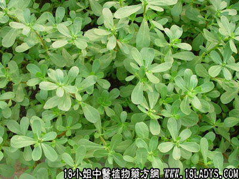

别名：蚬肉菜、酸味菜。
植物名：马齿苋。
生长环境：本品为一年生、匍匐或披散、肉质，分枝草本。常生于路旁或旷地上，尤以园地更为常见，性喜肥土，阳光充足的地方，稍耐旱。
分布：广东及我国其他各省均有分布。
入药部分：全草。
采集期：春、夏、秋。
自采地点：荒地。
性味：性微凉、味酸。
功能：清大肠湿热、消滞。
主治、用量和用法：1、大便下血：生用4两清水煎服；2、痢疾：生用2至4两，清水煎服；3、痔疮：生用1至2斤，煎水熏洗患处；4、痈疮：生用适量，加糖捣烂外敷患处。
验方：（治大便下血方）生瓜子菜8两，猪血1斤，清水8碗，煎成一碗服。
（方解）瓜子菜去大肠湿热，猪血止大肠出血，孙思邈论猪血曰：卒下血不止，清酒和炒食之，古有此验。民间用此方治大便下血之因于湿热者，甚验。
（方歌）大便下血瓜子菜，猪血同煲服宜再，因于湿热用此宜，沉疴既起病免灾。
参考资料：《广东中医》（1961年第二期）介绍佛山中医院采用土药瓜子菜治痔疮，对初期内痔及血栓性外痔，效果很好，有1/4病例不经手术获得全愈，其余亦减轻症状。
处方：瓜子菜4两、鸡蛋花5钱、煎炼成60毫升，炼药为一日量，分早晚二次服，六天为一疗程，可连服二疗程。